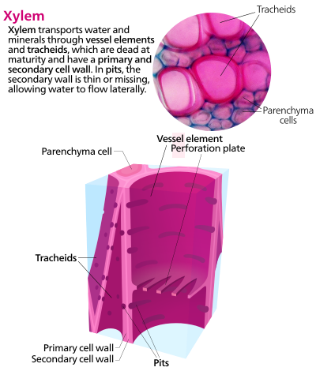

Xilem
Xilem dibagi menjadi 3: trakea, trakeid, dan parenkim xilem. Xilem tersusun atas sel-sel yang mengalami penebalan. Xilem adalah jaringan pembuluh angkut yang berfungsi menyerap air dan mineral dari akar ke organ lainnya. Selain itu Xilem juga berfungsi sebagai penguat struktur batang.